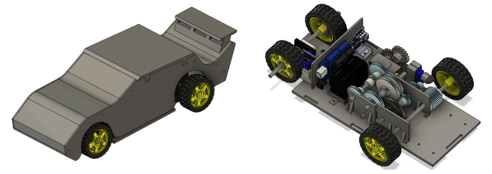
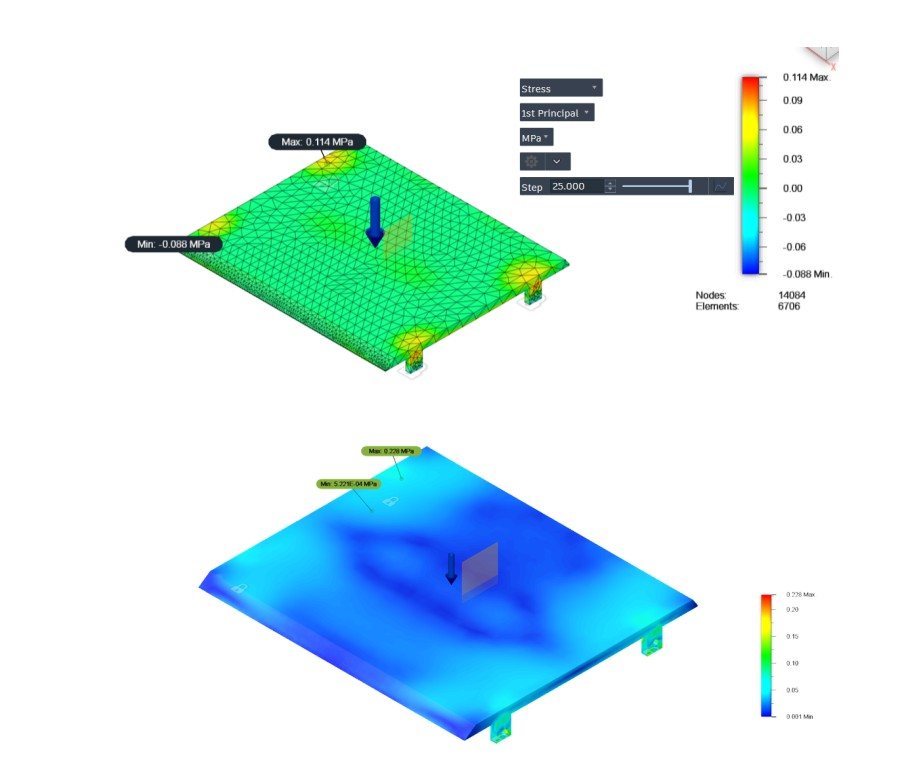

Heptathlon Car

A multi-speed Heptathlon car developed for a seven-event engineering competition. The vehicle used a servo-controlled sliding-mesh spur gear transmission with high-speed, high-torque, and reverse modes.
Project Overview
For ME 371: Mechanical Design I, my team designed and manufactured an heptathlon car capable of completing a heptathlon-style competition focused on speed, strength, agility, impact resistance, cost, quality, and drivetrain efficiency. The final design was centered around a compact, cam-actuated sliding mesh tranmission controlled through an IR remote. The drivetrain includes a 1:3 high-speed ratio, a 9:1 high-torque ratio, and a 1:3 reverse ratio.
Design Requirements
Our assigned customer, Jordan, wanted a compact, durable, and cost-effective vehicle with a polished racecar-inspired appearance, similar to the Pixar's movie Cars. The primary performance requirements were:
- Reach a speed greater than 1.25 m/s
- Carry a 1 kg load up a ramp
- Survive a 3 kg impact without breaking
- Complete five agility traversals
- Achieve at least 40% gearbox efficiency
- Remain below a total material cost of $25

Mechanical Design
The chassis and side panels were manufactured from 1/8-in Baltic birch plywood. The gears, motor mounts, transmission mounts, servo mounts, and electronics plate were 3D printed in PLA. TPU was selected for the impact roof and brake shoe because its flexibility allowed it to absorb deformation without permanently breaking.
Wooden dowels were used for the final wheel shafts to reduce vehicle mass, and standardized M3 fasteners simplified assembly and maintenance. The completed bill of materials totals to $24.75, meeting the budget.
Design Process
Our original concept used a four-speed synchromesh transmission with stacked cam shifting. During testing, the servo stalled due to excessive spring resistance, mounting difficulties, and mismatched diameters.
Due to this, we decide to pivot to a simplified three-gear sliding mesh system. The redesigned transmission system engaged consistently during testing, but unfortunately, the servo motors given lacked sufficient torque to shift the moving shaft reliably while the drivetrain was under load.
Testing progressed through several stages, from manually testing the gears to operating the car in the air before testing on the floor. This process revealed issues involving gear interference, insufficient backlash, manufacturing tolerances, etc.

Results
The final vehicle fully met the strength, cost, impact, and gearbox-efficiency requirements while partially meeting the speed and quality requirements. It carried the required 1 kg load successfully withstood the required 3 kg impact condition. The car reached a maximum recorded speed of 0.89 m/s, falling below the 1.25 m/s target, and completed 0.5 agility traversals due to transmission and shifting issues. Although the servo-actuated shoe-and-drum brake moved into position as intended, it did not generate enough force to slow the vehicle effectively. Overall, the car demonstrated strong structural and drivetrain performance but could use room to improve its shifting reliability, speed, and braking system.
Acknowledgements
This project was completed with Kavya Ajaykumar, Avani Kalari, and Siddharth Gummadapu for ME 371 at the University of Illinois Urbana-Champaign.